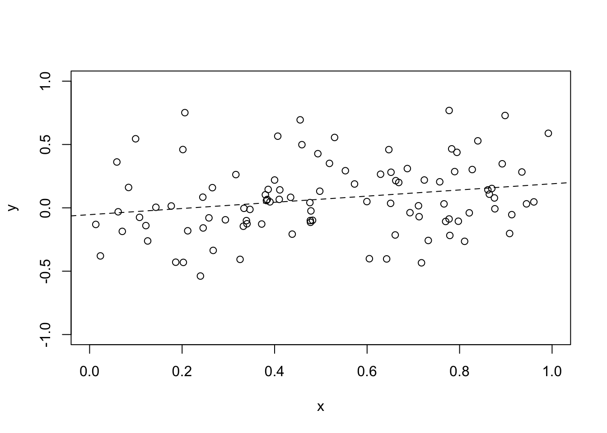

Last updated: 2018-04-16
Code version: 899ad0d
Cas Kruitwagen
Jan van den Broek j.vandenbroek@uu.nl
Computer lab login account: dooMID01 - dooMID32 passwd: Methdata$$
| independent variable | type of model |
|---|---|
| Grouping | ANOVA |
| Continuous | Regression |
| Both grouping and continous | Analysis of covariance |
All models can be referred to as linear models.
For a good model: the model ‘generated’ the data
\[y_{ij} = \mu + (\mu_i - \mu) + \epsilon_{ij}\]
Where \(y_{ij}\) are normally distributed with mean \(\mu_i\) and variance \(\sigma^2\).
Using estimators:
\[y_{ij} = \bar{y} + (\bar{y}_i - \bar{y}) + \epsilon_{ij}\]
In terms of deviations
\[y_{ij} - \bar{y} = (\bar{y}_i - \bar{y}) + \epsilon_{ij}\]
Total deviation = group deviation + residual
\[\sum_{i,j}{(y_{ij}-\bar{y})^2} = \sum_{i,j}{(\bar{y}_i-\bar{y})}+\sum_{i,j}\epsilon_{ij}^2\]
In words:
\[SS_{Total} = SS_{Group} + SS_{Residual}\]
The degrees of freedom:
Mean sums of squares = Variances:
\[MS_. = SS_./df_.\]
If groups have the same means, than variance between groups is equal to residual variance
\[F = \frac{MS_{Groups}}{MS_{Residual}} \approx 1\]
Looking at summary tables: not just verifying if the group means are different, but if the data fits the model.
One-way = grouping can only be done 1 way.
(Full)-factorial design: for more than 1 factors, all levels are present in all factors
\[y_{ijk} = \bar{y} + (\bar{y_i} - \bar{y}) + (\bar{y}_j - \bar{y}) + \epsilon_{ijk}\]
Now:
\[SS_{total} = SS_{treatment} + SS_{dose} + SS_{residual}\]
Also works when grouping variables are non independent
require(magrittr)
set.seed(2)
n = 100
eff1 = .1
eff2 = .2
resSD = 0.1
treatment = rbinom(n = n, size = 1, prob = .5)
dose = rbinom(n = n, size = 1, prob = .5)
y = eff1*treatment + eff2*dose + rnorm(n, sd = resSD)
aov(y~treatment+dose) %>% summary() Df Sum Sq Mean Sq F value Pr(>F)
treatment 1 0.1846 0.1846 18.67 3.75e-05 ***
dose 1 1.0902 1.0902 110.30 < 2e-16 ***
Residuals 97 0.9587 0.0099
---
Signif. codes: 0 '***' 0.001 '**' 0.01 '*' 0.05 '.' 0.1 ' ' 1Model
\[y_i = \beta_0+\beta_x * x_i + \epsilon_i\]
Assumes:
\[\min_{\beta_0, \beta_x}{(y_i-(\beta_0+\beta_x * x_i))^2}\]
Solution by differentiating with respect to parameters and set to zero.
\[\beta_x = \frac{\sum_{i}(x_i-\bar{x})(y_i-\bar{y})}{\sum_i(x_i-\bar{x})^2}\]
And
\[\beta_0 = \bar{y} - \beta_x*\bar{x}\]
\[y_i = \beta_0 + \beta_x *x + \epsilon_{i}\]
So
\[y_i - \bar{y} = \beta_0 -\bar{y}+ \beta_x *x + \epsilon_{i}\]
\[= -\beta_x*\bar{x}+ \beta_x *x + \epsilon_{i}\]
\[= \beta_x*(x-\bar{x}) + \epsilon_{i}\]
Regression: 1 DF, no slope is no regression
set.seed(1)
n = 100
x = runif(n)
b = 0.15
rs = 0.3
y = b*x + rnorm(n, sd=rs)
plot(x,y, xlim = c(0,1), ylim = c(floor(min(y)), ceiling(max(y))))
fit <- lm(y~x)
summary(fit)
Call:
lm(formula = y ~ x)
Residuals:
Min 1Q Median 3Q Max
-0.55493 -0.16867 -0.02612 0.15728 0.75498
Coefficients:
Estimate Std. Error t value Pr(>|t|)
(Intercept) -0.05380 0.06174 -0.871 0.3857
x 0.24370 0.10604 2.298 0.0237 *
---
Signif. codes: 0 '***' 0.001 '**' 0.01 '*' 0.05 '.' 0.1 ' ' 1
Residual standard error: 0.2823 on 98 degrees of freedom
Multiple R-squared: 0.05114, Adjusted R-squared: 0.04146
F-statistic: 5.282 on 1 and 98 DF, p-value: 0.02367abline(fit, lty=2)
Given both a grouping variable and a regression variable
Assuming:
\[y_{ij} = \bar{y} + (\bar{y}_i-\bar{y}) + \beta_x*x_{ij} + \epsilon_{ij}\]
Continous independent variable is also called the co-variate
set.seed(3)
n = 100
econt = 0.1
egroup = 0.2
rs = 0.3
ngroups= 4
xcont = runif(n)
xgroup = sample(0:(ngroups-1), replace = T, size = n)
y = econt * xcont + egroup * xgroup + rnorm(n, sd = rs)
fit <- glm(y~xcont+factor(xgroup))
summary(fit)
Call:
glm(formula = y ~ xcont + factor(xgroup))
Deviance Residuals:
Min 1Q Median 3Q Max
-0.76942 -0.23889 0.00932 0.22645 0.78362
Coefficients:
Estimate Std. Error t value Pr(>|t|)
(Intercept) -0.01493 0.08846 -0.169 0.8664
xcont 0.20243 0.11889 1.703 0.0919 .
factor(xgroup)1 0.10437 0.09212 1.133 0.2600
factor(xgroup)2 0.42880 0.09688 4.426 2.56e-05 ***
factor(xgroup)3 0.56722 0.09626 5.893 5.75e-08 ***
---
Signif. codes: 0 '***' 0.001 '**' 0.01 '*' 0.05 '.' 0.1 ' ' 1
(Dispersion parameter for gaussian family taken to be 0.1102306)
Null deviance: 15.679 on 99 degrees of freedom
Residual deviance: 10.472 on 95 degrees of freedom
AIC: 70.14
Number of Fisher Scoring iterations: 2aov(fit)Call:
aov(formula = fit)
Terms:
xcont factor(xgroup) Residuals
Sum of Squares 0.066364 5.140944 10.471909
Deg. of Freedom 1 3 95
Residual standard error: 0.33201
Estimated effects may be unbalancedWhen intercepts are different between groups
Degrees of freedom for interaction: df group * df regression
set.seed(3)
n = 100
econt = 0.1
egroup = 0.2
rs = 0.3
ngroups= 4
xcont = runif(n)
xgroup = sample(0:(ngroups-1), replace = T, size = n)
y = econt * xcont + egroup * xgroup + rnorm(n, sd = rs)
fit <- glm(y~xcont+factor(xgroup)+xcont:factor(xgroup))
summary(fit)
Call:
glm(formula = y ~ xcont + factor(xgroup) + xcont:factor(xgroup))
Deviance Residuals:
Min 1Q Median 3Q Max
-0.7600 -0.2308 -0.0123 0.2119 0.7276
Coefficients:
Estimate Std. Error t value Pr(>|t|)
(Intercept) 0.086025 0.147529 0.583 0.5613
xcont -0.008679 0.273273 -0.032 0.9747
factor(xgroup)1 -0.069220 0.201473 -0.344 0.7320
factor(xgroup)2 0.296641 0.199773 1.485 0.1410
factor(xgroup)3 0.489601 0.188891 2.592 0.0111 *
xcont:factor(xgroup)1 0.341147 0.350117 0.974 0.3324
xcont:factor(xgroup)2 0.276029 0.363366 0.760 0.4494
xcont:factor(xgroup)3 0.153226 0.362549 0.423 0.6735
---
Signif. codes: 0 '***' 0.001 '**' 0.01 '*' 0.05 '.' 0.1 ' ' 1
(Dispersion parameter for gaussian family taken to be 0.1125016)
Null deviance: 15.679 on 99 degrees of freedom
Residual deviance: 10.350 on 92 degrees of freedom
AIC: 74.971
Number of Fisher Scoring iterations: 2aov(fit)Call:
aov(formula = fit)
Terms:
xcont factor(xgroup) xcont:factor(xgroup) Residuals
Sum of Squares 0.066364 5.140944 0.121759 10.350150
Deg. of Freedom 1 3 3 92
Residual standard error: 0.3354126
Estimated effects may be unbalancedWhen a continous variable is only included as an interaction term, it is called nesting. So the continous variable is nested in the group variable.
sessionInfo()R version 3.4.3 (2017-11-30)
Platform: x86_64-apple-darwin15.6.0 (64-bit)
Running under: macOS Sierra 10.12.6
Matrix products: default
BLAS: /Library/Frameworks/R.framework/Versions/3.4/Resources/lib/libRblas.0.dylib
LAPACK: /Library/Frameworks/R.framework/Versions/3.4/Resources/lib/libRlapack.dylib
locale:
[1] en_US.UTF-8/en_US.UTF-8/en_US.UTF-8/C/en_US.UTF-8/en_US.UTF-8
attached base packages:
[1] stats graphics grDevices utils datasets methods base
other attached packages:
[1] magrittr_1.5
loaded via a namespace (and not attached):
[1] compiler_3.4.3 backports_1.1.2 rprojroot_1.3-2 tools_3.4.3
[5] htmltools_0.3.6 yaml_2.1.16 Rcpp_0.12.15 stringi_1.1.6
[9] rmarkdown_1.8 knitr_1.19 git2r_0.21.0 stringr_1.2.0
[13] digest_0.6.15 evaluate_0.10.1This R Markdown site was created with workflowr